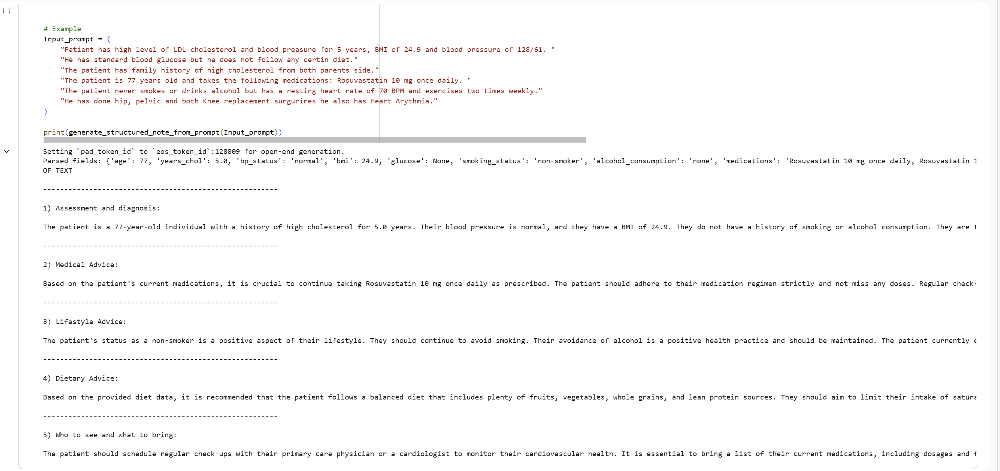
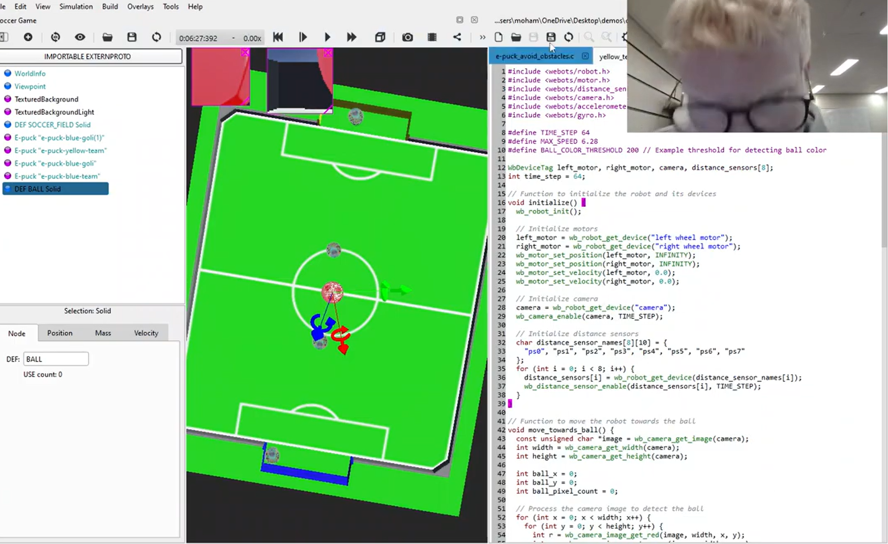
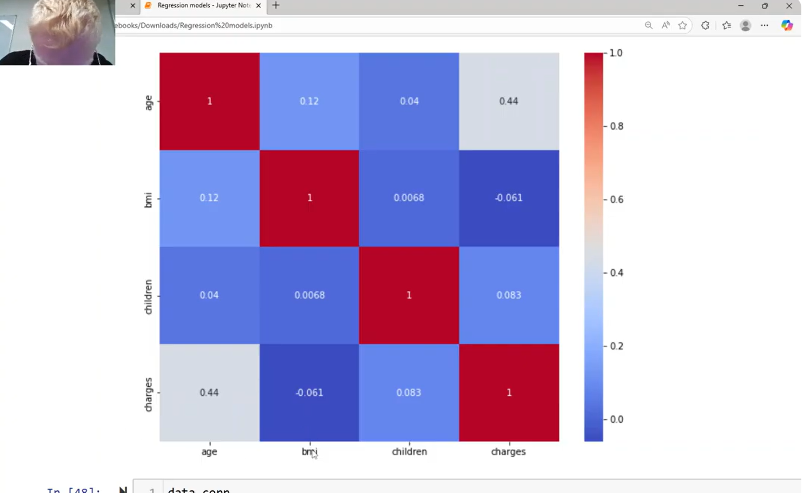
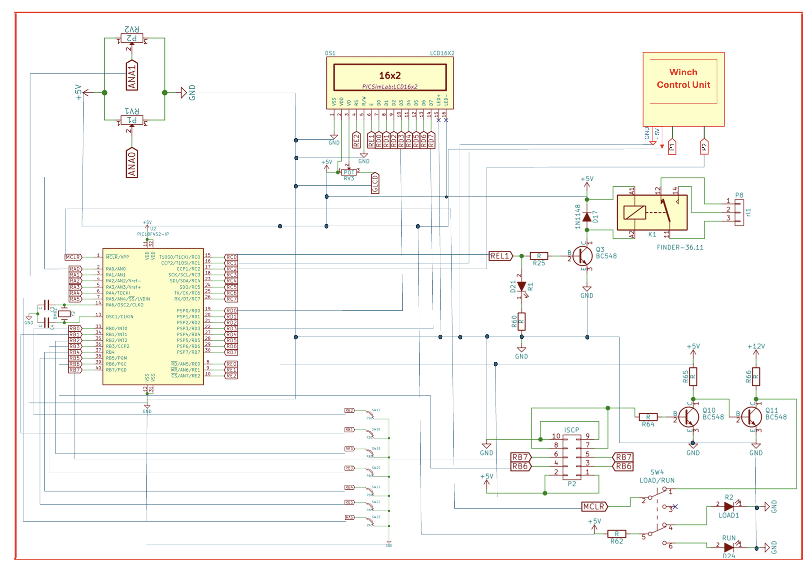

Projects / Portfolio
AI Medical Chatbot

Description: Developed an AI-powered chatbot to assist patients with cholesterol-related advice and basic consultation.
My Role: Designed and implemented the chatbot logic and user interaction flow.
Problem Solved: Helped users quickly access medical information without needing immediate doctor consultation.
Technologies Used: Python, Machine Learning, NLP
Lessons Learned: Improved understanding of AI integration and user-centered design.
Robot Soccer Navigation System

Description: Designed a navigation system for a robot to play soccer in a simulated environment.
My Role: Developed pathfinding and object detection algorithms.
Problem Solved: Enabled the robot to locate the ball and avoid opponent and score efficiently.
Technologies Used: Webots, Python, Sensors, Actuaters, Color Sigmintation, Computer Vision
Lessons Learned: Gained experience in robotics and real-time decision-making.
Data Analytics for Healthcare insurance dataset

Description: Built a python script that visualise existing data cells for different individual conditions to predict charges for new individuals insurance cverage.
My Role: Implemented standard deviation and various other mathmatical models as average and median as well as visualisation charts to show existing customers status.
Problem Solved: Enabled the insurance company to predict charges based on an individuals's health pre-existing health conditions, BMI, smoking status, number of children and many more factors.
Technologies Used: Python, Data analytics, Jupyter Notebook and mathmatical libraries as NUMPY
Lessons Learned: Strengthened knowledge in data analytics programming.
Elevator operational system

Description:Designed an operational logical system in C that controls relays, switches, motors, buttons and much more cirrcuit components to enable an elvator to travel in between two floors plus Ground.
My Role: Implemented Cirrcuit design and embedded systems concepts to allow for maintance mode, door sensors object recognition and floor button order tasking
Problem Solved: Leveraged the use of MP LAB X editor IDE to verify the logic operation and fault find potenial mistakes within the system.
Technologies Used: C, Embedded systems, MP Lab X IDE, Cirrcuit simulation, PIC boards as PIC Genious and PIC18F452
Lessons Learned: Increased knowlage in cirrcuit desgin and state based diagrams.
For more Projects and information about further or previous work experiance please download my CV.